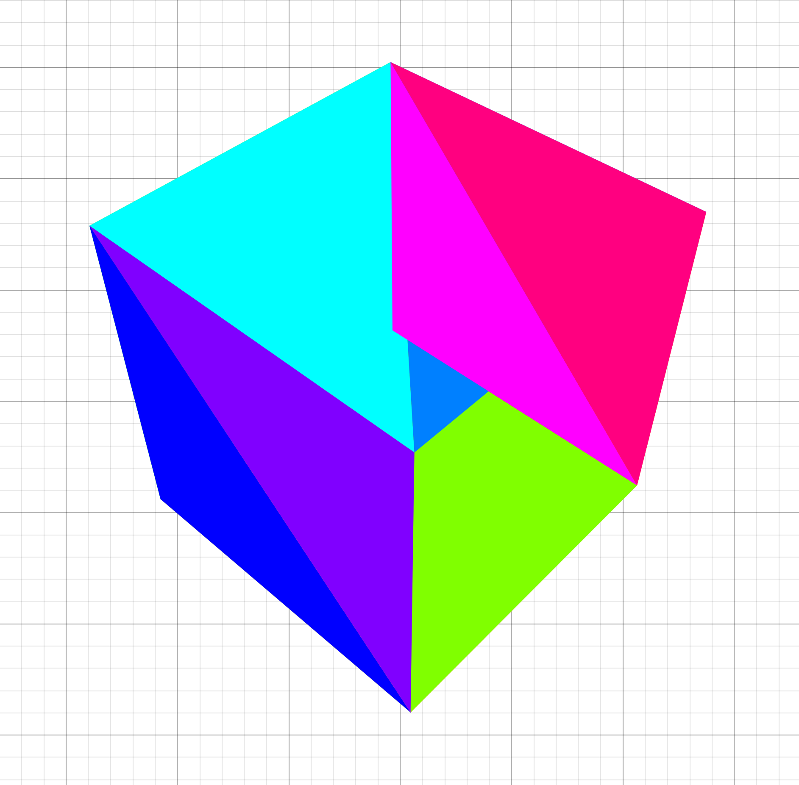

a 3d renderer in 2d desmos
11 may 2024
This project started seven months ago, when my precalc teacher told us about his brilliant assignment: make an artistic graph in the Desmos Graphing calculator. I knew I wanted to make something in 3D, but I didn't get it working in time, so I ended up making this monstrosity.
About a month ago, he had us make another graph, and I knew I wanted to one-up myself. I thought back to that 3D renderer I tried to implement but failed to get working, and tried to fix it up!
Here you can see my first attempt at a perspective projection in Desmos.
Getting over Desmos' quirks
To get to this point, I had to jump over so many hurdles. For one, Desmos doesn't support lists of lists, which makes doing any operation that requires multiple positions clumsy. The best way I've come up with to mitigate this is to store one list for each component of the calculation.
The lack of lists of lists also makes representing matrices annoying. I settled on flattening out the list and using the formula matrix[row * width + column] to get the value of the cell.
The issue with my first attempt
Well, as it turns out, through all my years of graphics programming up to that point, I had never actually learned how the perspective matrix worked! The whole thing was a really humbling experience for me and it got me to read up more on the math, hidden behind wrappers, that I've been using so often.
The missing step was the divide by w, which is integral to getting the perspective distortion that brings objects closer to the center of the screen the farther they are away. The w value is set to the actual z value, whereas the z value is mapped from the interval [near, far] to [0, 1], which is why my previous attempt that divided by z didn't look correct.
Loading 3D models
The next hurdle was getting 3D models from Blender into the graphing calculator. For this, I used a separate program in C that used Assimp to parse files and spit out various lists ready to copy and paste into Desmos.
Alright, I've got the data now. Time to render it! Because I used the vertex/index buffer format that OpenGL uses, it was simple to get all the polygons rendered like so.
desmodder scriptpolygon(
f_transform(
M_world2ndc,
x_vbo[i_vtx0],
y_vbo[i_vtx0],
z_vbo[i_vtx0]
),
f_transform(
M_world2ndc,
x_vbo[i_vtx1],
y_vbo[i_vtx1],
z_vbo[i_vtx1]
),
f_transform(
M_world2ndc,
x_vbo[i_vtx2],
y_vbo[i_vtx2],
z_vbo[i_vtx2]
)
)
Great! We've got a working renderer now.

Oh.
Implementing depth sorting
Well, it's time to implement depth sorting! I'll describe my (slow) first attempt in detail here, and later on I'll go over optimizations. The main idea is this: if we draw the triangles in order from front to back, then the triangles in the back will be occluded by the triangles in front, like they're supposed to!
In order to implement this, I used the centroid of the triangle as its position and projected each of them to use its z position in NDC as its depth.
desmodder scriptt_centroidX =
(x_vbo[i_idx0] + x_vbo[i_idx1] + x_vbo[i_idx2]) / 3
t_centroidY =
(y_vbo[i_idx0] + y_vbo[i_idx1] + y_vbo[i_idx2]) / 3
t_centroidZ =
(z_vbo[i_idx0] + z_vbo[i_idx1] + z_vbo[i_idx2]) / 3
t_depths = -f_z3(T, t_centroidX, t_centroidY, t_centroidZ)
Here's where my first implementation gets a bit dumb. I had to sort the indices for each triangle, but keep the indices together.
So I did the most straightforward thing!
desmodder scriptt_keys =
[t_depths[floor(i / 3) + 1] for i in 0..t_depths.length / 3]
i_sorted = sort(i_ibo, t_keys)
That actually works, but it's slow because it allocates so many lists and sorts 3x the data it needs to. Oh well, let's implement lighting now and optimize later!
Phong shading
To really cap it all off, I added the phong shading model to the renderer, which is a really fast approximation for proper lighting that really sells the 3D effect.
desmodder scriptt_spec =
max(
f_dot3v(
t_viewDirX / t_viewDirNorm,
t_viewDirY / t_viewDirNorm,
t_viewDirZ / t_viewDirNorm,
l[1] - 2 * x_norm * t_dotNormIncident,
l[2] - 2 * y_norm * t_dotNormIncident,
l[3] - 2 * z_norm * t_dotNormIncident
),
0
( ^ 32
t_l =
sort(
0.1 + max(
x_norm * -l[1] + y_norm * -l[2] + z_norm * -l[3],
0
) + t_spec * 0.3,
t_depths
)
The final result
Update 18/5/2025
This graph is featured in the 2024 Desmos Art Expo! Check it out at https://desmos.com/art.
That's the end of this post. Thanks for reading!
Back to top ⤴

wip: my custom game engine
5 may 2024
A short note:
You might think I haven't given this engine a name yet. But you'd be wrong! The name is wip, and that's for good reason. I've started projects many times because I came up with a cool name for them. But as soon as I start a project like that, the project's doomed, because I'm hyped for the cool name, not for what the project actually is. When the novelty of the name wears off, so does my motivation to finish the project, and by giving it a dumb name like work in progress, I think I'm finally excited about the project for the project, and not for the name.
Which language?
I'll start with the language I chose for this project, because I'm 1) really enjoying it and 2) kind of unconventional for these types of things.
I'm using C. Why C? Before this project, I programmed mainly in C++, and before that, I used managed languages like Java and C#. Though I enjoyed programming in those languages at the time, I realized that I was prone to writing unnecessarily complex code when given the resources to do so.
For example, I'd use huge amounts of C++ templating, even though I wasn't going to be releasing the engine to the public or anything, so that bit shouldn't've even been there in the first place. Or I'd develop some hugely complex state management system, which only served to muddle the waters between me and the finished feature.
In the languages I used to use, it was like the language features served to push me in the direction of unnecessary complexity, whereas in C, I feel like complexity is something I have to actively seek out (which I'm trying my best not to do).
Before I get farther into bikeshedding territory, let's move on to the parts of the engine I'm really proud of!
The physics engine
I'm super proud of this. The biggest hurdle for me is always getting some sort of collision detection in place, and the daunting task has killed many a short project of mine. Though the engine is currently not physically based in any way, it does work to keep the player above ground and outside of trees. I've had to optimize it to get it working at real time, but it's nowhere near being fully efficient.
I wanted it to support three different shapes: triangle meshes, capsules, and spheres. It was relatively easy to pull code to handle collisions between triangles and spheres, and because capsules are like a special case of spheres, it was relatively easy to adapt the code to work with them, too.
Great. I now have a working physics engine, right? No.
Sure, the collisions worked, but that's a moot point when the game now runs at five frames per second, so it's time to optimize. In the engine's current state, the world is partitioned into regions that are the same size as a chunk. Next, each of the physics objects in view are placed in the regions that their bounding boxes intersect with, which is the first step to reducing expensive compares when doing collision resolution. Next, objects are checked in pairs in each region, but pairs are skipped when their bounding boxes don't intersect, which further increases performance.
There's still things to improve and learn, though. I still have absolutely no idea what a BVH tree is, or how it can improve performance, and after watching Mike Acton's talk on Data Oriented Design, I realized my design is inherently bad for cache coherency.
The renderer
The renderer includes stuff I've learned previously, such as chunking, instanced rendering, and dithering, but also includes lots of new optimizations I had to figure out in order for it to get running well.
At first, I made the simplest thing that worked: no culling, one draw call per object, and huge amounts of wasted OpenGL calls. To no one's surprise, the renderer struggled to reach 60 frames per second even in simple scenes, such as a flat landscape with some spheres scattered around it.
It was fine for the time being, but as I added dynamic shadows, high-poly trees, and more detailed terrain, the program started to chug. I saw the milliseconds per frame slowly climb as I added features, first from 18 to 25 when I added shadows, and then to nearly 120 when I added in my precious trees.
Now, old me would have probably given up here, but hey, this project is a work in progress. There's always room for improvement. First, I changed the renderer to use instanced rendering. I thought there would be a huge improvement in frame times, but there really wasn't. I kept the development, though, because one draw call seemed better than many. I almost gave up here because I thought I didn't know how to speed it up in any way.
Frustum culling (120 -> 40 ms per frame)
Okay, so instanced rendering didn't help me out. But what if I just found ways to draw less stuff? First, I tried a naive solution to frustum culling. Using atan2 on the relative position of each game object to the player, I drew each object only if the angle found was inside the player's FOV. This worked to some extent, but because it didn't account for perspective distortion and only compared the centers of each object, there were many cases where trees and other objects would pop in and out of view.
Alright, so blindly comparing the relative angle doesn't really work. However, I found a new naive solution: simply project each of the corners of the object's bounding box, and then see whether it gets culled. If any of the corners aren't culled, then the object is in view! This worked a lot better than the last solution because it was actually rooted in some sort of reasoning, but it missed some cases such as when the bounding box was partially in view but whose vertices are all clipped.
As always, it's LearnOpenGL to the rescue. There's a great article on it about frustum culling, and after implementing the solution found on the website, I was able to get analytical frustum culling in place, which made the artifacts go away. However, some trees that are out of view still cast shadows that end up in view, so the shadow pass uses a frustum that starts farther back from the eye of the player, thus increasing the number of trees it renders on the sides of the frustum.
Levels of detail (40 -> 25 ms per frame)
Okay, so I'm drawing less trees now. However, after some inspection, I found that I was still trying to draw fifteen million triangles a frame! To further reduce the amount of triangles drawn, I decided to implement levels of detail for my trees.
The first step is to make new, less detailed models for trees that are far away. The goal here is to decrease the amount of triangles drawn for trees that are far away, because the player won't even be able to see the extra detail. I created new, lower poly models for each tree, which I render in place of the full detail model when the trees are more than forty-five units away.
Here's a comparison between the draw calls I was making before and the draw calls I'm making now. The call for 201000 vertices is for a small bush, by the way.
Without LOD:

With LOD:

One last thing... (25 -> 11 ms per frame)
After the previous two optimizations, I really thought I had nowhere left to go, and thought I'd just have to start getting rid of leaves.
But one day, I was scrolling in the OpenTK Discord server, and I saw this conversation:
BoyBaykiller: Nice!
BoyBaykiller: Are you on an intel gpu?
caps lock: nvidia
caps lock: rtx 2060
BoyBaykiller: ok, I know this seems stupid but can you make sure its actually using that with Console.WriteLine(GL.GetString(StringName.Renderer));
That prompted me to check whether OpenGL was actually rendering on my RX 6500M, because my laptop also has integrated graphics in it.
It, uh, wasn't.

To fix this, I added two lines of code that force AMD and nVidia drivers to use their proper GPUs.
C__attribute__((dllexport)) int AmdPowerXpressRequestHighPerformance = 1;
__attribute__((dllexport)) DWORD NvOptimusEnablement = 0x00000001;
The final result

That's the end of this post. Thanks for reading!
Back to top ⤴

tōsuto: a scripting language
21 april 2024
I've recently been wanting to get back into making programming languages again, so I've started up this project to fulfill that desire. Though I didn't have a goal for what the project would be, I knew that I wanted it to have a really minimal syntax that, given it was my first language, made at least some sense with good amounts of continuity.
I started off by playing around in my code editor and seeing what looked okay. Inspired by Jai and Odin, I made my function declaration syntax super simple, with just a single colon between the name and the arguments and body. To make the language more concise, I made boolean operators a single keystroke because they're used much more often (in my daily use) than bitwise operators are. This also makes the ternary operator redundant, as one can simply use ands and ors to build a substitute.
Let's go over some of the features of the language!
Variable declarations, reassignments, and accesses are like most walrus operator languages. Semicolons are not required at the end of lines.
tōsutoa := 3
a = 4
Function declarations are as simple as typing out the name and args. The body can be a single statement with an arrow, or a block with curlies. The last statement is implicitly returned, but the ret keyword can be used to return early.
tōsutoadd : a b -> a + b
multiply : a b {
a * b
}
Because I wanted to try experimenting with different languages, identifiers follow the rules specified in Microsoft's MSVC extensions.
tōsutoﾄｰｽﾄ := "toast"
toast := "toast"
pain_grillé := "toast"
Objects are very minimal and are similar to Lua's tables, where calling a member function with a colon will pass the object as the first parameter. This first parameter can be called anything, which allows greater flexibility when making constructors or other special functions.
tōsutovec2 := [|
new : base x y -> base with [|x = x, y = y|]
dot : my other -> my.x * other.x + my.y * other.y
// ... other stuff
|]
vec := vec2:new(1, 2)
test_dot = vec:dot(vec2:new(3, 3))
Note the use of the with keyword in the previous example. This allows easy construction of objects, using the existing object as a template for the constructed object, and a second object that is appended to the first. Though this is nowhere near the most efficient way to do things, it's definitely one of the easiest to implement!
The language uses a custom bytecode and vm that I implemented based on the one in Crafting Interpreters, which I optimized heavily. During this optimization, I rewrote the vm to move away from the C++ class based implementation that I previously used and returned to the land of C, which, in my opinion, turns out to be much nicer and easier to write bytecode interpreters in, anyway.
Unlike the implementation in Crafting Interpreters, I adapted the vm from my original tree-walk interpreter. This means that my compiler works in stages, instead of the CI implementation which lexed, parsed, and compiled the source file in one step. The compiler works remarkably similarly to the tree-walk interpreter as a result, working recursively down the tree of nodes. However, instead of running the code, it spits out bytecode, an example of which can be seen below.
tōsuto bytecodeanonymous:
0000 lit_16
0003 glob_d ﾌｨﾎﾞ
0006 glob_g ﾌｨﾎﾞ
0009 lit_8 9.000000
0011 call 1
0013 pop
0014 ret
anonymous.ﾌｨﾎﾞ:
0000 loc_g 1
0003 lit_8 2.000000
0005 lt
0006 jmpf 4 (6->13)
0009 pop
0010 loc_g 1
0013 jmpf 3 (13->19)
0016 jmp 23 (16->42)
0019 pop
0020 glob_g ﾌｨﾎﾞ
0023 loc_g 1
0026 ld_1
0027 sub
0028 call 1
0030 glob_g ﾌｨﾎﾞ
0033 loc_g 1
0036 lit_8 2.000000
0038 sub
0039 call 1
0041 add
0042 ret
That's as far as I've gone with the project so far. I still have ideas for things I want to do with it, though, ranging from trying to write a more complete standard library for it to making an ahead-of-time compiler for it.
That's the end of this post. Thanks for reading!
Back to top ⤴

halftoning in glsl
14 april 2024
Recently I've been working on a game using OpenGL and C. I've been having great fun making my own data structures and re-implementing all the math from scratch, which has allowed me to gain some more understanding of how games work.
This game will have a sort of playful, comic-book style feel to it, so I first tried to determine what makes comic books look the way they do.
One thing in common with all comic books is that they're, well, printed. This means that they all exhibit a similar visual effect that results from printing: halftoning.
Printers have a hard challenge to solve. They must be able to print in full color (or full grayscale) on a white background, using a limited amount of colors of ink. Halftoning is one method that printers implement to print in this manner, and with a little help from Wikipedia, I learned that the main ideas are as follows:
- The background is white. In order to print darker colors, the printer must use ink to subtract color from what's already there.
- One such subtractive color model is CMYK, standing for cyan, magenta, yellow, and black.
- Ink pools up in circles on the paper, and by controlling the amount of ink released by the jet, circles of different radii can be made.
- When ink of different colors are placed on top of each other, they combine to create different colors.
- The dots of ink can be placed in a grid, and by rotating each grid by a different amount, the color combinations are made.
At first, I implemented this in GLSL in two stages. First, I'd convert the three-element RGB image of the render to a four-element CMYK image. Second, I'd use a halftoning shader that could turn the CMYK image into the dots that made up the 'printed' image.
Let's go over the code to convert RGB to CMYK. CMYK happens to be symmetrical to RGB, so it's easy to convert between the two.
glslvec3 color = texture(u_tex, v_uv).rgb;
float r = color.r, g = color.g, b = color.b;
float k = 1 - max(r, max(g, b));
float light = 1 - k;
float c = (light - r) / light;
float m = (light - g) / light;
float y = (light - b) / light;
f_color = vec4(c, m, y, k);
The halftoning shader works as follows: starting with white as the output color, I'd run through each of the four CMYK 'screens' of dots, and depending on whether that pixel is part of a dot, subtract the corresponding value from the pixel color.
Because CMYK is symmetric to RGB, all one has to do to get the CMYK effect is subtract a color in RGB to get the corresponding CMYK color.
- Cyan: subtract red
- Magenta: subtract green
- Yellow: subtract blue
- Black: subtract white
To get the radius of each circle, I computed the average color of four pixels that surrounded each circle's center. Then, deciding whether to subtract color from that pixel is easy: if the average color is X% magenta, then fill the circle that covers X% of the square. Of course, it's impossible to get a circle to fill a square without it going over, so this calculation must be repeated for each neighboring square, too.

This works well on its own, but in order to get a better result, I had to blur the image first so that sharp edges weren't rendered badly. The unmodified code only samples the four corners of each square, so the average color of all the pixels in the square isn't taken into account. By blurring the image beforehand, we can save samples and still get the averaged out result when sampling only the corners. The end result is what you see at the top of your screen!
That's the end of this post. Thanks for reading!
Back to top ⤴